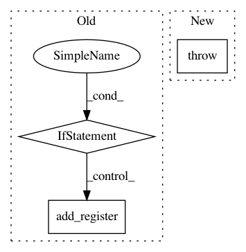

ec2185f92eb3794e03e3b4e438befdc81f253cce,qiskit/aqua/circuits/fourier_transform_circuits.py,FourierTransformCircuits,construct_circuit,#Any#Any#Any#Any#Any#,37
Before Change
circuit.add_register(qubits)
elif is_qubit_list(qubits):
for qubit in qubits:
if not circuit.has_register(qubit[0]):
circuit.add_register(qubit[0])
else:
raise AquaError("A QuantumRegister or a list of qubits is expected for the input qubits.")
if do_swaps and not inverse:
After Change
if not circuit.has_register(qubit.register):
circuit.add_register(qubit.register)
else:
raise AquaError("A QuantumRegister or a list of qubits is expected for the input qubits.")
else:
raise AquaError("A QuantumRegister or a list of qubits is expected for the input qubits.")
if do_swaps and not inverse:
In pattern: SUPERPATTERN
Frequency: 3
Non-data size: 3
Instances
Project Name: Qiskit/qiskit-aqua
Commit Name: ec2185f92eb3794e03e3b4e438befdc81f253cce
Time: 2019-05-21
Author: shaohan.hu@ibm.com
File Name: qiskit/aqua/circuits/fourier_transform_circuits.py
Class Name: FourierTransformCircuits
Method Name: construct_circuit
Project Name: Qiskit/qiskit-aqua
Commit Name: ac6b297b39c548db783a3ba7d437517121f93989
Time: 2019-06-13
Author: shaohan.hu@ibm.com
File Name: qiskit/aqua/components/initial_states/custom.py
Class Name: Custom
Method Name: construct_circuit
Project Name: Qiskit/qiskit-aqua
Commit Name: 94af8c77906e893487672e0141bbdc0eee619277
Time: 2019-03-07
Author: dongreenberg2@gmail.com
File Name: qiskit/aqua/algorithms/adaptive/vqalgorithm.py
Class Name: VQAlgorithm
Method Name: get_optimal_vector